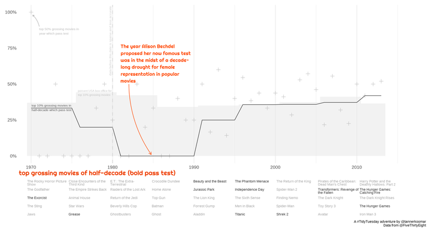
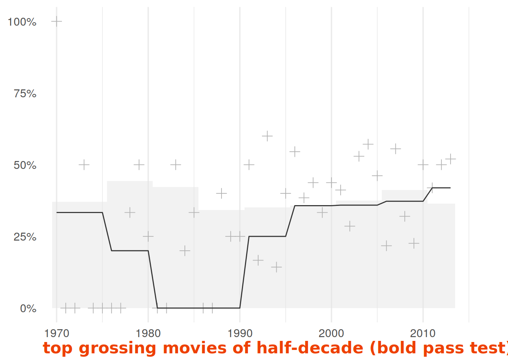
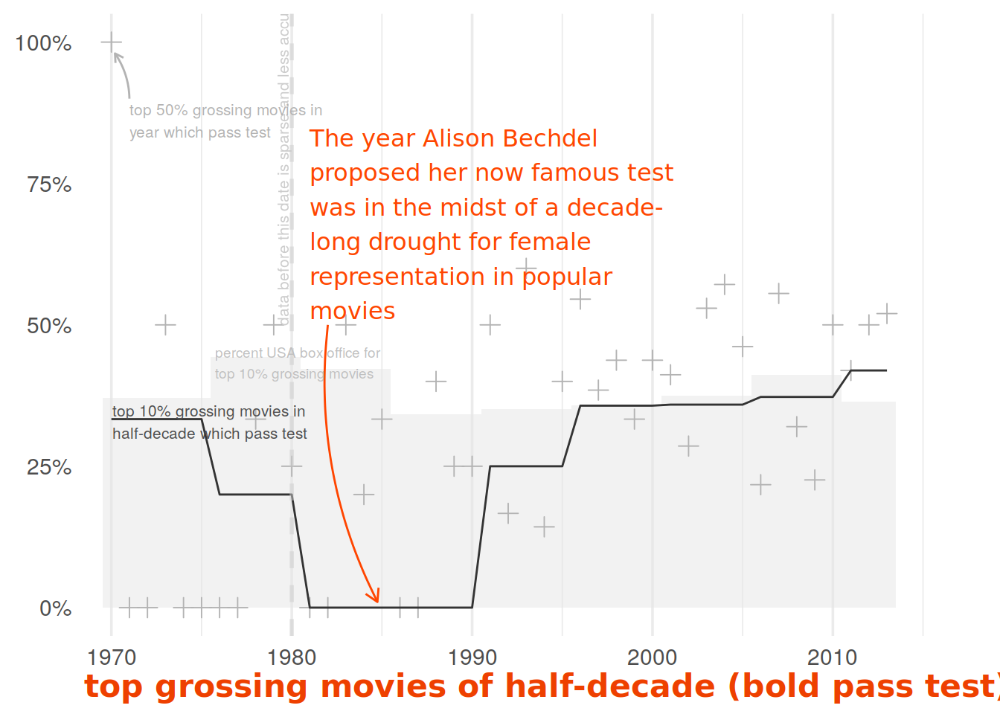
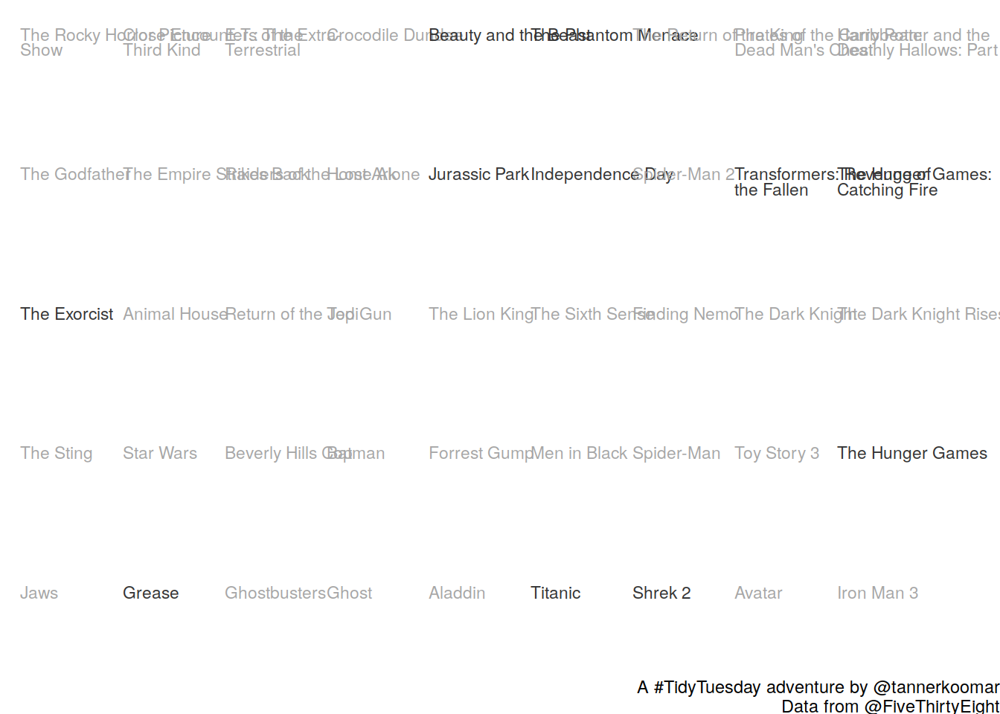

Bechdel Test

Load Packages
library(tidyverse)
library(patchwork)
library(showtext)
font_add_google("Righteous", "Righteous")
showtext_auto()Read in data
There’s a miscalculation where the obscure Frozen (2010) has the same reported box office as the Disney musical Frozen (2013). I’m too lazy to look up what its real box office was, so I just removed it.
movies_detail <- readr::read_csv('https://github.com/rfordatascience/tidytuesday/blob/master/data/2021/2021-03-09/movies.csv?raw=true', na = c("NA", "#N/A")) %>%
mutate(binary = binary == "PASS") %>%
filter(!(year == 2010 & title == "Frozen"))
movies <- readr::read_csv('https://raw.githubusercontent.com/rfordatascience/tidytuesday/master/data/2021/2021-03-09/raw_bechdel.csv') Top Plot
top_pct_lustrum <- movies_detail %>%
drop_na(domgross_2013) %>%
mutate(lustrum = cut_width(year, 5, boundary = 1975)) %>%
group_by(lustrum) %>%
arrange(desc(domgross_2013)) %>%
mutate(rank = rank(domgross_2013)) %>%
mutate(rank = rank/max(rank)) %>%
mutate(pct_gross = domgross_2013/sum(domgross_2013)) %>%
filter(rank >= 0.9) %>%
summarize(
pct_lustrum = mean(binary, na.rm =T),
pct_lustrum_gross = sum(pct_gross)
) %>%
ungroup()
top_pct_year <- movies_detail %>%
drop_na(domgross_2013) %>%
mutate(lustrum = cut_width(year, 5, boundary = 1975)) %>%
group_by(year, lustrum) %>%
mutate(rank = rank(domgross_2013)) %>%
mutate(rank = rank/max(rank)) %>%
mutate(pct_gross = domgross_2013/sum(domgross_2013)) %>%
filter(rank >= 0.75) %>%
summarize(
pct_year = mean(binary, na.rm =T),
pct_year_gross = sum(pct_gross)
) %>%
ungroup()
p1 <- top_pct_lustrum %>%
inner_join(top_pct_year) %>%
ggplot(aes(x = year)) +
geom_col(
aes(y = pct_lustrum_gross),
fill = 'grey90', width = 1, alpha = 1/2
) +
geom_point(aes(y = pct_year),
shape = 3,
size = 3,
color = 'grey70') +
geom_line(aes(y = pct_lustrum), color = 'grey20') +
theme_minimal(base_size = 14, base_family = "sans") +
scale_x_continuous(expand = expansion(add = c(1,5))) +
scale_y_continuous(labels = scales::label_percent()) +
labs(
y = NULL,
x = 'top grossing movies of half-decade (bold pass test)') +
theme(
axis.title =
element_text(
family = "Righteous",
face = 'bold',
hjust = 0,
size = 16,
color = 'orangered2',
),
panel.grid.major.y = element_blank(),
panel.grid.minor.y = element_blank()
)
p1
Annotate it
p1 <- p1 +
annotate(
geom = 'curve',
xend = 1984.75, yend = .01, x = 1982, y = 0.5,
curvature = 0.15,ncp = 9, lwd = 1/2,
arrow = arrow(length = unit(1/2, 'lines')),
color = 'orangered1'
) +
annotate(
geom = 'text',
family = "Righteous",
x = 1981,
y = 0.51,
size= 4.25,
label = "The year Alison Bechdel proposed her now famous test was in the midst of a decade-long drought for female representation in popular movies" %>%
str_wrap(30), hjust = 0, vjust = 0, color = 'orangered1'
) +
geom_vline(
xintercept = 1980,
color = 'grey80',
alpha = 1/2,
lty = 2,
size = 1
) +
annotate(
geom = 'text',
x = 1979.85,
y = 0.80,
label = 'data before this date is sparse and less accurate',
angle = 90,
hjust = 1/2,
vjust = 0,
size = 2.75,
color = 'grey80'
) +
annotate(
geom = 'text',
x = 1970.05,
y = .358,
hjust = 0,
vjust = 1,
color = 'grey30',
size = 2.75,
label = 'top 10% grossing movies in \nhalf-decade which pass test'
) +
annotate(
geom = 'curve',
xend = 1970.2, yend = .98, x = 1971, y = 0.9,
curvature = 0.15, ncp = 9, lwd = 1/2,
arrow = arrow(length = unit(1/3, 'lines')),
color = 'grey70'
) +
annotate(
geom = 'text',
x = 1971,
y = .89,
hjust = 0,
vjust = 1,
color = 'grey70',
size = 2.75,
label = 'top 50% grossing movies in\nyear which pass test'
) +
annotate(
geom = 'text',
color = 'grey75',
x = 1975.75,
y = 0.46,
hjust = 0,
vjust = 1,
size = 2.5,
label = 'percent USA box office for\ntop 10% grossing movies'
)
p1
Bottom Plot
p2 <- movies_detail %>%
drop_na(domgross_2013) %>%
mutate(lustrum = cut_width(year, 5, boundary = 1975)) %>%
group_by(lustrum) %>%
mutate(rank = rank(domgross_2013)) %>%
mutate(rank = rank/max(rank)) %>%
arrange(desc(rank)) %>%
slice(1:5) %>%
select(lustrum, title, binary) %>%
mutate(
title = title %>%
str_replace("'", "'") %>%
str_remove_all("Star Wars: Episode .*- ") %>%
str_remove_all("The Lord of the Rings: ")
) %>%
mutate(
rank = rank(str_length(title), ties.method = 'first'),
title = str_wrap(title, width = 25)
) %>%
ggplot(aes(x = lustrum, y = rank)) +
geom_text(aes(label = title, color = binary),
hjust = 0, vjust = 1, size = 3, lineheight = 3/4) +
theme_void(base_family = "sans") +
scale_x_discrete(expand = expansion(add = c(1/5,8/5))) +
scale_y_discrete(expand = expansion(add = c(3/5,1/5))) +
scale_color_manual(
values = c('TRUE' = 'grey20', 'FALSE' = 'grey65'),
guide = guide_none()) +
labs(
caption = "A #TidyTuesday adventure by @tannerkoomar\nData from @FiveThirtyEight"
)
p2
Plots Assemble!
final_plot <- wrap_plots(
list(p1, p2), ncol = 1, heights = c(4, 1)
)
final_plot